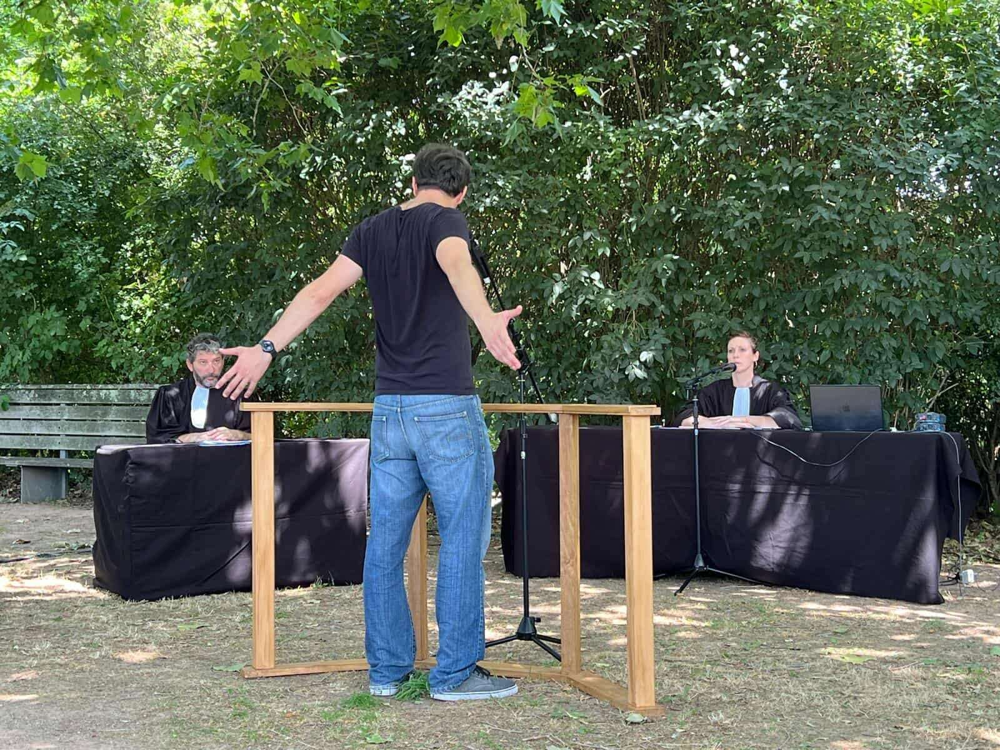
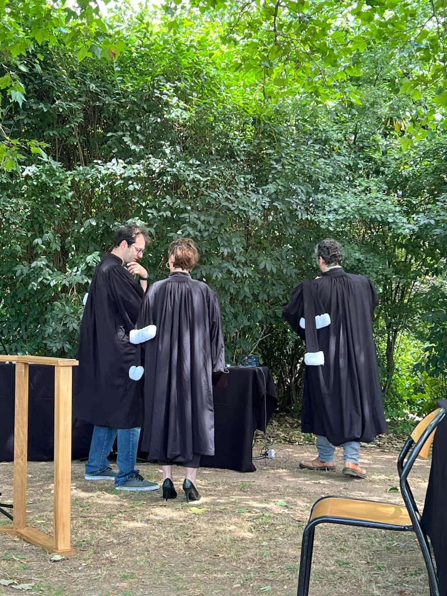
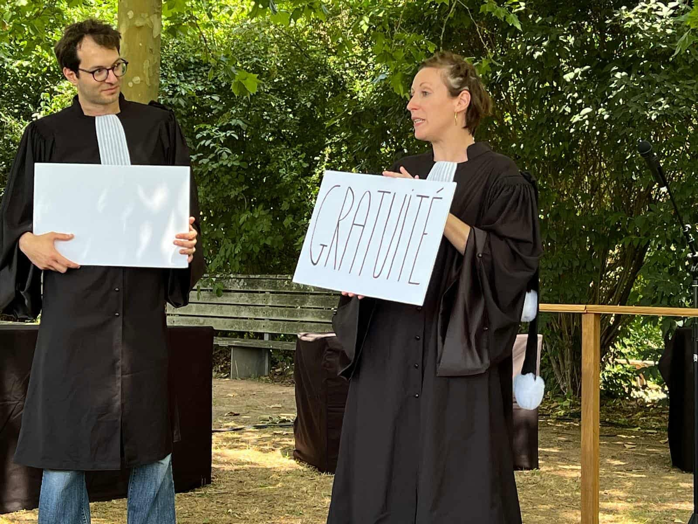
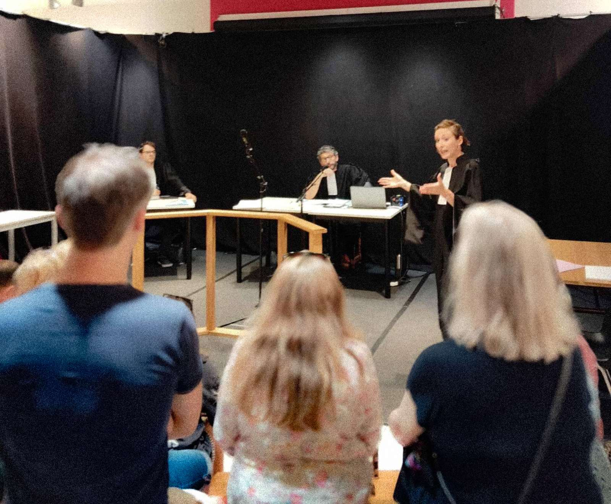
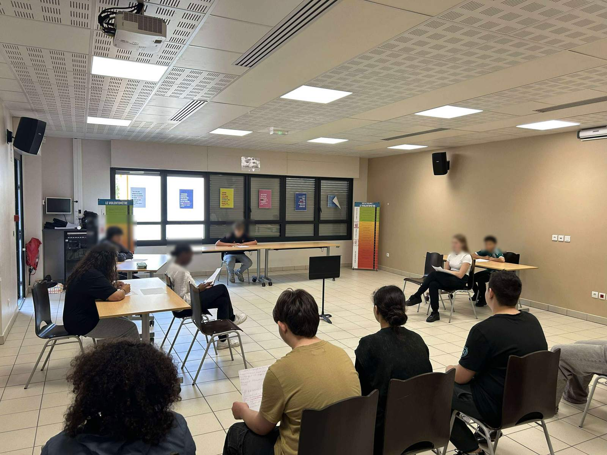
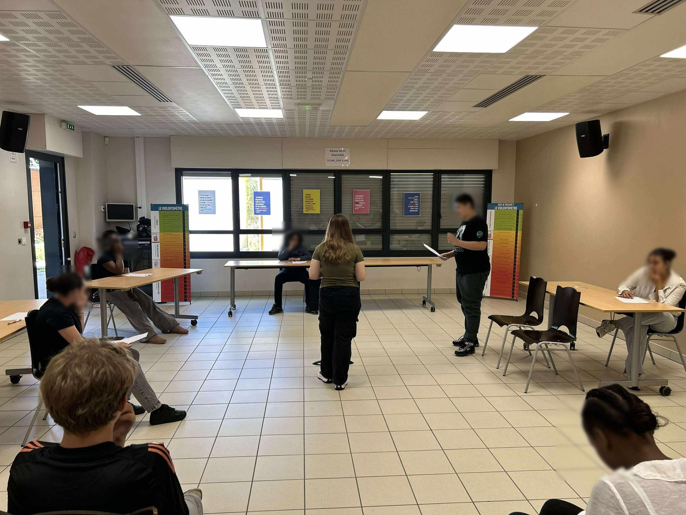

2025
Audiences
Rôle Procureur général, juge, accusé, narrateur
CDN de Normandie-Rouen / Compagnie du P'tit Ballon
Un spectacle de prévention, joué au collège.
Violences sexistes et sexuelles, stéréotypes, consentement —
à travers le prisme de la justice.
Photographies







Distribution
- Steeve Brunet
- Marine Chambrier
- Adrien Vada